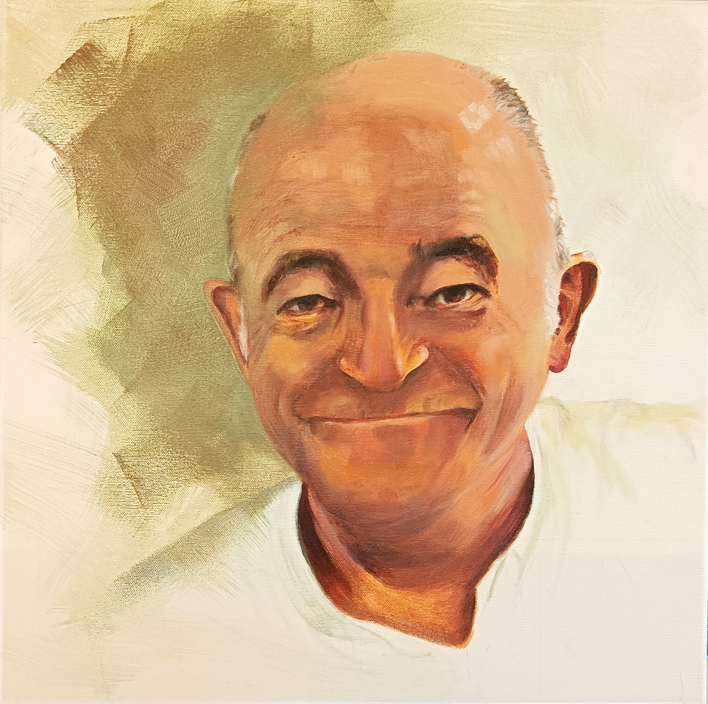
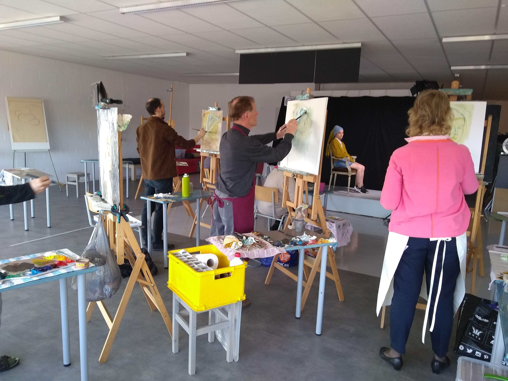

Open atelier dagen
Kom je graag eens de sfeer opsnuiven, kijken wat wij al geschilderd en getekend hebben of doe je graag mee? Je bent welkom op de opendeurdagen, de koffie staat al klaar!
Wanneer?
| Wo 15, vr 17, za 18 november 2023 | 10:00 tot 12:00 |
|---|---|
| Wo 22, vr 24, za 25 november 2023 | 10:00 tot 12:00 |
Waar?
Verfschuur- 1ste verdieping (trap rechts) Leuvensesteenweg 206 Boutersem-Roosbeek
Gezellig atelier
Klaar om jouw volgende beeldavontuur uit te kiezen? Kom je schilderen, tekenen? Zoek je naar inspiratie of
eerder coaching?
Kunstdroom neemt je mee in de artistieke wereld in ons gezellig en goed uitgerust model- en projectatelier
met een persoonlijke aanpak.
Interesse? Ontdek hieronder alle cursussen in ons aanbod.
Contacteer ons via kunstdroom@outlook.be of bel ons op het nummer
0479 06 4625

Projectatelier
Het atelier streeft ernaar om jouw eigen mogelijkheden te laten ontdekken en een eigen praktijk-expertise uit te bouwen. Om jou zo te stimuleren jezelf te ontwikkelen als autonoom kunstenaar. De visies en benaderingen van de medestudenten uit verschillende disciplines zorgen voor een bredere kijk op kunst. Creativiteit staat voorop en zo wordt het projectatelier een denklab. Het is een verwevenheid van verschillende disciplines, zoals: tekenkunst, aquarel, schilderkunst en gemengde techniek.
Woensdag
Op woensdag breng je uw eigen project mee waarmee je aan de slag wil. Dit kan een foto of een stilleven
zijn
dat je wil schilderen of tekenen. Tijdens dit artistiek proces word je begeleid waarbij experiment,
overleg
en besprekingen belangrijke elementen zijn.
Eén sessie duurt 3 u 15 min, er wordt één koffiepauze gehouden.
Tekenen of schilderen naar levend model

Het menselijk lichaam is een dankbaar onderwerp om weer te geven. Modeltekenen is de beste oefening om
te leren tekenen wat je ziet en niet wat je denkt te zien!
Het geeft enorm veel voldoening te merken dat je in staat bent om met een potlood of pen de perfectie
van de menselijke vorm weer te geven.
Modelschilderen/tekenen vraagt veel concentratie en oefening, je doet namelijk veel dingen tegelijkertijd. Naast het aandachtig kijken naar het model, dien je ook te bepalen hoe je het model in de ruimte van je schilderij/tekening plaatst. Je houdt bij het tekenen en schilderen het overzicht op de compositie en de grote lijnen van het geheel. Daarbij moet je goed kijken naar de totale houding, de verhoudingen van het lichaam en optische verkortingen. Je besteedt bovendien aandacht aan de lichtval, de lichte en donkere partijen.
Onder het motto 'oefening baart kunst' bieden we in het atelier een reeks sessies tekenen/schilderen naar levend model aan. Onze modellen, zowel mannen als vrouwen, hebben de nodige ervaring.
Vrijdag
Eén sessie duurt 3 u 15 min, waarbij we starten met een pose van 40 minuten. Na de koffiepauze gaan we verder met dezelfde pose tot aan de middag met de nodige pauzes ertussen. Het model zal normaal gezien drie vrijdagen na elkaar dezelfde pose aannemen zodat de werken tot een goed einde kunnen gebracht worden. Tijdens de sessies kan de cursist zich verplaatsen om het model vanuit een ander standpunt te tekenen of schilderen.
Tijdens deze lessenreeks overlopen we de basisprincipes, krijg je tips & tricks om je model op papier te zetten en oefenen we met verschillende materialen.
De volgende lessen kan je oefenen en vrij tekenen of schilderen met het materiaal naar keuze. Er zal begeleiding zijn, soms wordt er een oefening gegeven, maar deze zijn vrijblijvend.
Met het nodige respect kijken we naar het werk van onze collega’s en leren we van elkaar.
Voor een vlot verloop van de sessie vragen wij om minstens 10 minuten voor aanvang aanwezig te zijn om je werkplaats in te richten, want we starten stipt. Eigen materiaal mee te brengen.
Zaterdag
Eén sessie duurt 3 u 15 min, waarbij we starten met drie korte oefeningen van 2-4-5 minuten om op te warmen. Vervolgens doen we poses van 10 of 20 minuten met de nodige pauzes ertussen.
Tijdens deze lessenreeks worden er verschillende methodes aangereikt om snel en resoluut de beweging van de figuur weer te geven. Daarbij is het ook belangrijk om krachtige trefzekere lijnen te gebruiken. Om verder los te komen oefenen we met verschillende materialen.
De volgende lessen kan je oefenen en vrij tekenen of schilderen met materiaal naar keuze. Er zal begeleiding zijn, soms wordt er een oefening gegeven, maar deze zijn vrijblijvend.
Met het nodige respect kijken we naar het werk van onze collega’s en leren we van elkaar.
Voor een vlot verloop van de sessie vragen wij om minstens 10 minuten voor aanvang aanwezig te zijn om je werkplaats in te richten, want we starten stipt. Eigen materiaal mee te brengen.